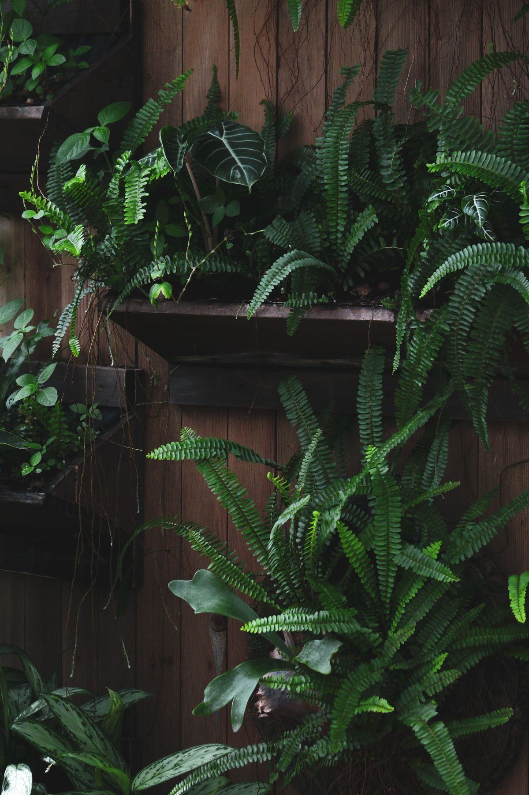

Chez un particulier, les surfaces sont petites — 2 à 10 m² le plus souvent — mais l'exigence de finition est la plus élevée de toutes : le mur est vu de près, tous les jours, et le moindre plant en souffrance se remarque.

Le bon emplacement est rarement celui qu'on imagine en premier. Il combine trois conditions : de la lumière, un support solide et un accès facile pour l'arrosage et l'entretien.
Pan de mur derrière le canapé, tête de lit ou séparation avec la salle à manger. Le salon offre en général la meilleure lumière du logement et un accès dégagé. Point de vigilance : la proximité d'un radiateur ou d'un insert, qui assèche l'air et brûle le feuillage.
Ce sont les endroits où quelques mètres carrés produisent le plus d'effet, notamment dans une double hauteur. Mais ils sont souvent sombres : sans éclairage horticole, un mur naturel n'y tiendra pas. Le stabilisé y est très fréquent, d'autant qu'il évite tout ruissellement au-dessus d'un escalier.
Les projections de graisse et la chaleur des plaques limitent les emplacements : le mur se place sur la paroi opposée aux zones de cuisson. Un mur d'aromatiques est possible mais demande une lumière franche et un entretien fréquent.
Si elle est éclairée par une fenêtre, c'est un excellent emplacement pour un mur naturel : fougères et plantes tropicales adorent l'hygrométrie élevée. En revanche, le stabilisé y est déconseillé — l'humidité permanente dégrade mousses et feuillages conservés. C'est le seul cas où le vivant est plus simple que le stabilisé.
C'est la partie invisible du projet, et pourtant celle qui conditionne sa sécurité. Un mur végétal vivant est un ouvrage lourd et humide fixé à hauteur d'homme.
Gorgé d'eau, un mur naturel pèse 40 à 100 kg par m² selon le système et l'épaisseur du substrat. Un mur de 6 m² peut donc représenter plusieurs centaines de kilos suspendus. Ce chiffre commande tout le reste : le type de fixation, le nombre de points d'ancrage et parfois le recours à une structure posée au sol.
Sur béton ou brique pleine, la fixation est directe avec des chevilles adaptées. Sur une cloison en plaques de plâtre, la charge doit être reprise sur les montants de l'ossature ou sur une structure indépendante. Sur un mur ancien en pierre ou en pisé, une étude préalable est indispensable. Le détail figure sur la page installation et support.
Un mur vivant ne se pose jamais à même la paroi : une lame d'air et une membrane étanche protègent le bâti. Sans cette précaution, auréoles et décollements de peinture apparaissent en quelques mois.
L'idéal est une alimentation en eau et une évacuation proches. Sur les petites surfaces domestiques, un système à réservoir avec pompe et bac de récupération évite les travaux de plomberie, au prix d'un remplissage manuel toutes les une à trois semaines. Une prise dédiée est nécessaire pour la pompe et le programmateur.
Dans un logement, la plupart des échecs ne viennent ni du système ni des plantes, mais de deux paramètres d'ambiance que l'on néglige au moment de choisir l'emplacement.
Un mur naturel réclame une lumière suffisante dix à douze heures par jour, et l'éclairage d'ambiance d'un salon n'y suffit pas. Dans une entrée ou une cage d'escalier, il faut un éclairage horticole dédié : comptez 100 à 300 € par m², plus la consommation. Le rendu de couleur doit rester acceptable dans une pièce de vie — les spots à lumière rose sont rarement compatibles avec un salon.
Un radiateur placé sous le mur, un insert à quelques mètres ou une bouche de ventilation dirigée vers le feuillage suffisent à dessécher un mur végétal en une saison de chauffe. Le végétal doit être décalé, ou le chauffage dévié. En hiver, l'air d'un logement chauffé descend souvent sous 40 % d'hygrométrie : les fougères le supportent mal, d'où l'intérêt de choisir des plantes tolérantes dès la conception.
Tous les projets domestiques ne se valent pas en complexité. Il existe un format pour chaque budget et chaque niveau d'implication.
Un cadre végétalisé, stabilisé le plus souvent, qui se fixe comme une œuvre lourde. Aucun raccordement, entretien limité au dépoussiérage. Le format idéal pour tester l'effet, et le plus adapté à une location.
Le format le plus courant chez les particuliers. Il justifie une vraie étude : support, étanchéité, irrigation, éclairage. C'est aussi à partir de cette surface que l'effet devient spatial — le mur ne décore plus, il transforme la perception de la pièce.
Double hauteur, cage d'escalier, véranda. Le projet relève alors du chantier : plomberie, électricité, structure, accès en hauteur pour l'entretien. Il se conçoit idéalement pendant une rénovation, quand les réseaux sont encore accessibles.
Fourchettes constatées en France, pose comprise, hors travaux de plomberie et d'électricité. Les prix au m² sont donnés hors taxes ; en logement de plus de deux ans, un taux de TVA réduit peut s'appliquer sur certaines prestations — le partenaire vous le confirmera.
| Projet domestique | Ce que comprend le prix | Prix indicatif HT |
|---|---|---|
| Mur stabilisé, prix au m² | Végétaux stabilisés, cadre, pose | 400 – 900 €/m² |
| Mur naturel vivant, prix au m² | Support, substrat, plants, pose — hors irrigation | 600 – 1 200 €/m² |
| Pan de mur, 4 m² | Fourniture et pose selon le système retenu | 1 600 – 4 800 € |
| Mur de salon, 6 m² | Étude, fourniture et installation complète | 3 500 – 7 000 € |
| Mur complet, 10 m² | Étude, fourniture et installation complète | 4 000 – 12 000 € |
| Éclairage horticole | Projecteurs, rails et raccordement | 100 – 300 €/m² |
| Entretien d'un mur naturel | Visites, engrais, taille, remplacement de plants | 80 – 200 €/m²/an |
Un mur végétal domestique n'est pas un produit de rayon : le tarif dépend du support, de la lumière et de la façon d'amener l'eau. Un installateur donne une estimation en quelques minutes s'il dispose des bonnes informations.
Les dimensions du mur envisagé, une photo de la pièce prise de face, la nature du support (béton, brique, placo), l'orientation et la taille des fenêtres, la distance à un point d'eau, la présence d'un radiateur, et votre préférence entre vivant et stabilisé. Précisez si vous êtes locataire : cela oriente vers des systèmes démontables.
Verdalys ne conçoit ni n'installe de murs végétaux. Nous cadrons votre projet, vérifions sa faisabilité et le transmettons à un installateur partenaire intervenant près de chez vous. Il vous rappelle sous 24 h ouvrées et établit un devis sur mesure après visite ou sur plans. La mise en relation est gratuite et sans engagement.
Gratuit, sans engagement — deux minutes pour décrire la pièce et le mur.
Démarrer ma demande